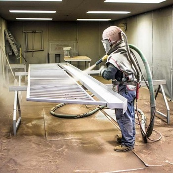

Химическая обработка/пропарка
Химическая обработка (деконтаминация), предлагаемая ООО «Крок» при подготовке оборудования к вскрытию – эффективный, современный метод, позволяющий сократить время пропарки, снизить риски возгорания отложений содержащих пирофорные соединения, улучшить качество очистки внутренних поверхностей аппаратов и как следствие сократить время на последующую механическую чистку. Принцип химической обработки, основан на взаимодействии химического реагента, содержащего поверхностно активные вещества, с остатками углеводородных отложений. Реагент, подаваемый в пар, контактирует с внутренними поверхностями колонн, аппаратов и трубопроводов, снижая поверхностное натяжение углеводородных отложений и, способствует их выводу в составе водно-углеводородной эмульсии, что позволяет выполнить дегазацию — приведение обрабатываемой среды до норм предельно допустимой концентрации (ПДК) по содержанию вредных веществ за короткий период времени.
